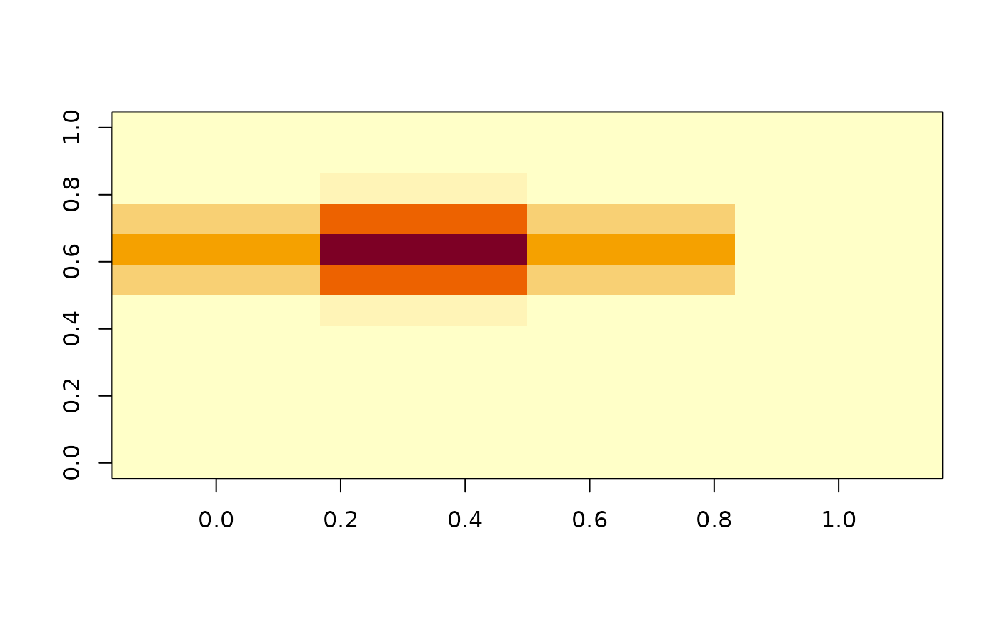

Splash dispersal multi-binomial in a pixel
multi_var_binom.RdGenerate a two dimensional probability distribution representing the probability of spore dispersal from an inoculum source. Generates the probability distribution with each entry representing a single plant. Pixel size represents the whole spatial size
Arguments
- row_spacing
Crop row spacing in meters
- stdev
Standard deviation of splash distribution. defaults to pixel size
- px
pixel size, length and width of square pixel
- seeding_r
number of plants sown in a pixel (
px)- IO
number of infective sites within the pixel
- m
(optional) a matrix representing each plant and the number of infective sites for each plant
Value
probability matrix where each entry gives the probability of splash dispersal from infective sites to the respective entry
Examples
set.seed(7)
# obtain matrix of probabilities
mvb <- multi_var_binom()
image(t(mvb))

# sample the plant (matrix cell) where the spore may drop
sample(seq_along(mvb), size = 10, prob = mvb, replace = TRUE)
#> [1] 20 20 19 7 21 44 20 21 20 19
# sample the cardinal coordinates (matrix cell) where the spore may drop
sam_mvb <- sample(seq_along(mvb), size = 10, prob = mvb, replace = TRUE)
data.frame(x = sapply(sam_mvb,FUN = function(x) ceiling(x/ nrow(mvb))),
y = sapply(sam_mvb,FUN = function(x) x %% nrow(mvb)))
#> x y
#> 1 1 7
#> 2 2 8
#> 3 2 9
#> 4 2 8
#> 5 1 8
#> 6 2 8
#> 7 4 9
#> 8 2 7
#> 9 1 8
#> 10 2 7
# simulate spore dispersal over 40 spread events
for(sp in 1:40){
if(sp == 1){
m1 <- multi_var_binom()
m0 <- matrix(0,nrow = nrow(m1),ncol = ncol(m1))
ind1 <- sample(seq_along(m1), size = 1, prob = m1, replace = TRUE)
m0[ind1] <- 1
}else{
m1 <- multi_var_binom(m = m0)
ind1 <- sample(seq_along(m1), size = 1, prob = m1, replace = TRUE)
m0[ind1] <- m0[ind1] + 1
}
}
image(t(m1))